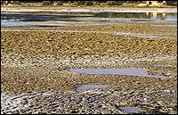

|
A narrow strip of land on the banks of the Nile was suitable for growing crops.
This land was fertile for two main reasons.

It was well fertilised by the silt deposited by the receding flood waters every year. And, it was close enough to the river so that farmers could dig irrigation trenches to keep their crops well-watered during the growing season.
|